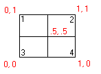

|
LowerLeftCorner Property |
Gets the lower-left corner of the current active viewport.
Signature
object.LowerLeftCorner
object
Viewport
The object this property applies to.
LowerLeftCorner
Variant (two-element array of doubles); read-only
A 2D coordinate representing the lower-left corner of the current active viewport.
Remarks
The LowerLeftCorner and UpperRightCorner properties represent the graphic placement of the viewport on the display. These properties are defined as follows:

Viewport 1有owerLeftCorner = (0, .5), UpperRightCorner = (.5, 1)
Viewport 2有owerLeftCorner = (.5, .5), UpperRightCorner = (1, 1)
Viewport 3有owerLeftCorner = (0, 0), UpperRightCorner = (.5, .5)
Viewport 4有owerLeftCorner = (.5, 0), UpperRightCorner = (1, .5)
| Comments? |